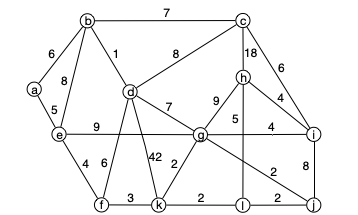

Arbres arborescence de poids minimulcouvrants
Ces algorithmes sont plus compliqué que dans le cas non valué.
Exemple
On considère le graphe ci-dessous :

Avec un peu d'imagination considérez que c'est le graphe de construction d'une petite île du pacifique dont vous êtes le nouveau chef d'état.
- Quel est l'arête qui sera forcément dans tous les arbres couvrants de poids minimum ?
- Quel est l'arête qui ne sera forcément jamais dans un arbre couvrant de poids minimum ?
- y a-t-il plusieurs arbres couvrants de poids minimum pour ce graphe ?
solution
solution
Toutes les preuves de cette partie et de la partie suivante vont fonctionner la même manière :
- on va ajouter une arête à un arbre
- ce nouveau graphe n'est plus un arbre mais il est connexe : il existe un cycle
- en supprimant n'importe quelle arête de ce cycle, le graphe redevient un arbre.
- si on supprime judicieusement l'arête du cycle, on arrivera à une contradiction. car le nouvel arbre sera mieux que l'arbre initial.
- Il n'y a qu'une seule arête avec une valuation minimale. S'il existait un arbre couvrant qui ne la possédait pas, on pourrait l'ajouter à cet arbre. Ce ne serait alors plus un arbre, il existerait donc un cycle. En supprimant une arête de ce cycle (on peut choisir une arête de valuation non minimale) on aurait à nouveau un arbre (connexe et nombre minimum d'arête), mais qui serait de valuation totale strictement plus petite que notre premier arbre. Ce qui est impossible puisqu'il était déjà de valuation minimale.
- Il n'y a qu'une seule arête avec une valuation maximale. De plus, il existe des cycles la contenant dans le graphe initial. Si on suppose qu'un arbre couvrant possède cette arête de valuation maximale et qu'on la supprime de l'arbre, on va se retrouver avec 2 parties connexes. Comme il existe un cycle contenant l'arête de valuation maximale dans le graphe initial, il va exister une arête du graphe initial qui relie les 2 parties connexes nouvellement créées. L'ajouter à notre graphe va à nouveau le rendre connexe : ce sera à nouveau un arbre. Comme il serait de valuation strictement plus petite que notre arbre initial, ce n'est pas possible.
- Oui, il existe plusieurs arbres couvrant car le cycle k-g-j-l est de valuation constante et valant 2. Un raisonnement identique aux 2 précédent montre que l'on peut échanger une arête de valuation 2 par une autre dans un arbre de valuation minimale.
Propriétés
Un arbre couvrant de poids minimum d'un graphe possède de nombreuses propriétés. Démontrons en quelques unes :
Montrez que s'il existe deux arbres couvrants de poids minimum qui ne différent que d'une arête, alors ces deux arêtes ont même valuation.
solution
solution
Les 2 arbres ont même valuation de la somme des valuations de leurs arêtes : les 2 arêtes différentes ont donc forcément même valuation.
Montrez que si toutes les valuations sont différentes, il n'existe qu'un seul arbre couvrant de poids minimal.
solution
solution
On range les valuations des 2 arbres par ordre croissant. Les deux arbres étant différents, on s'arrête à la 1ère position dans cet ordre qui contient 2 arêtes différentes. L'une des arêtes va avoir une valuation inférieure à l'autre. On peut alors procéder comme précédemment et ajouter l'arête de valuation la plus petite dans l'autre arbre. Il faudra alors à nouveau supprimer une arête qui forme un cycle, mais on pourra enlever une arête de valuation plus grande, ce qui est impossible car l'arbre initial était de valuation minimale.
Montrez que la réciproque de l'exercice précédent n'est pas vraie.
solution
solution
Si le graphe de départ est un arbre, il n'y a qu'un seul arbre couvant et les valuations peuvent être égales.
Un petit exercice dont la résolution va nous aider à prouver les algorithmes de construction d'arbres de poids minimum :
Montrez que si $T_1$ et $T_2$ sont deux arbres couvrants de poids minium de $(G, f)$. Et soit $uv$ une arête de $T_1$ qui n'est pas présente dans $T_2$.
Montrez qu'il existe un arbres couvrant de poids minium $T'_2$ dont les arêtes en commun avec $T_1$ sont exactement celles de $T_2$ plus $uv$.
solution
solution
TBD propriété d'échange à écrire propre.
Déduire de l'exercice précédent que si $(G, f)$ est un graphe connexe valué, le graphe $\mathcal{G}=(\mathcal{T}[G], E)$ est connexe. Avec :
- $\mathcal{T}[G]$ l'ensemble des arbres de longueur minimum de$(G, f)$,
- il existe une arête entre deux arbres s'ils ne diffèrent que d'une arête.
solution
solution
TBD si $k$ différences, l'exercice précédent dit qu'il existe un alm avec $k-1$ différences puis on récurse.
Algorithmes
Kruskal
TBD sans valuation. Comme composantes connexes (sans ordre)
TBD Kruskal. On le fait :
- en ajoutant des arêtes en restant sans cycle : algo glouton. On prouve la minimalité par échange.
- on optimise en montrant que c'est de la connexité. si 2 composantes connexes arbre on peut les lier et on reste arbre
- on implémente çe avec des couleurs (attention à la mise à jour)
- calcul de complexité $\mathcal{O}(n^2\log(n))$ s'il faut trier, et $\mathcal{O}(n^2)$ sinon. Le calcul est tricky : que n mise à jour des couleurs.
Algorithme de Prim
TBD algo et preuve sous la forme de propositions. Parler de glouton et faire les dessins. Glouton aussi et on grossi à chaque fois 1 unique arborescence. TBD BFS + file de priorité plutôt que pile
Ce problème a l'air dur, mais il possède un algorithme (assez) simple pour le résoudre. L'algorithme suivant est l'algorithme de Prim (1957) :
Entrée :
- un graphe G = (V, E)
- une valuation f qui associe un réel à toute arête de G
Algorithme :
coût_entree(x) = +∞ pour tout sommet x
prédécesseur(x) = x pour tout sommet x
V' = {}, E' = {}
on choisit un sommet r quelconque
coût_entree(r) = 0
ajoute r à V'
tant que V' n'est pas V:
pour tous les voisins x de r qui ne sont pas dans V':
si cout_entree(x) >= f(rx):
cout_entree(x) = f(rx)
predecesseur(x) = r
soit x le sommet de V qui n'est pas dans V' minimisant cout_entree(x)
r = x
cout_entree(r) = 0
ajoute r à V' et {r, predecesseur(r)} à E'
rendre T = (V', E')- Prouver que si G est connexe, alors T est connexe et est un arbre
- Prouver que $T$ est un arbre couvrant de poids minimal pour $G$.
solution
solution
Voir wikipedia. Tout y est très bien expliqué.
Maintenant qu'on est sur que ça marche :
Réalisez l'algorithme en entier sur le graphe précédent.
TBD montrer que ça ne marche pas si arborescence. r -> A 3 r -> B 1 A->B 1
Application
Les arbres couvrant se retrouvent parfois dans des endroits inattendus et permettent de résoudre simplement des problèmes plus complexes.
Dans un réseau de communication, on appelle débit la quantité d'information que le réseau garantit de pouvoir faire passer entre deux sommets. Dans cet exercice, le réseau est modélisé par un graphe $G = (X, E)$ connexe. Chaque arête est munie d'une bande passante (qui ici sera appelée poids), $v: E\to \mathbb{R}^+$, qui limite la quantité d'information qu'elle peut véhiculer. Le but de l'exercice est de mettre au point des algorithmes permettant de calculer le débit. Le graphe suivant va servir d'exemple. :

Montrer que si $\mathcal{C}_{xy}$ est l'ensemble des chemins entre $x$ et $y$ alors le débit entre $x$ et $y$ s'écrit :
solution
solution
TBD
En déduire, à l'aide d'arguments simples, que la chaîne de débit maximum entre $A$ et $C$ pour le graphe exemple a un débit égal à trois.
solution
solution
TBD
Passons au cas général :
Soit $T$ un arbre couvrant de poids maximum d'un graphe connexe valué $(G, f)$. On appelle $T_1$ et $T_2$ les deux composantes connexes que l'on obtient, à partir de $T$, en enlevant l'arête de poids minimum sur la chaîne de $T$ entre $x$ et $y$. Prouver que la valuation minimale de la chaîne de $T$ joignant $x$ et $y$ vaut $D(x, y)$ pour le réseau $G$.
solution
solution
TBD
Quelle méthode peut-on appliquer pour déterminer, dans un graphe quelconque $G$, une chaîne de débit maximum entre deux sommets quelconques de $G$ ?
solution
solution
TBD arbre unique chemin entre deux sommets TBD
Et retour à l'exemple pour conclure :
Appliquer cette méthode pour déterminer une chaîne de débit maximum entre $B$ et $E$ dans le réseau exemple.
solution
solution
TBD